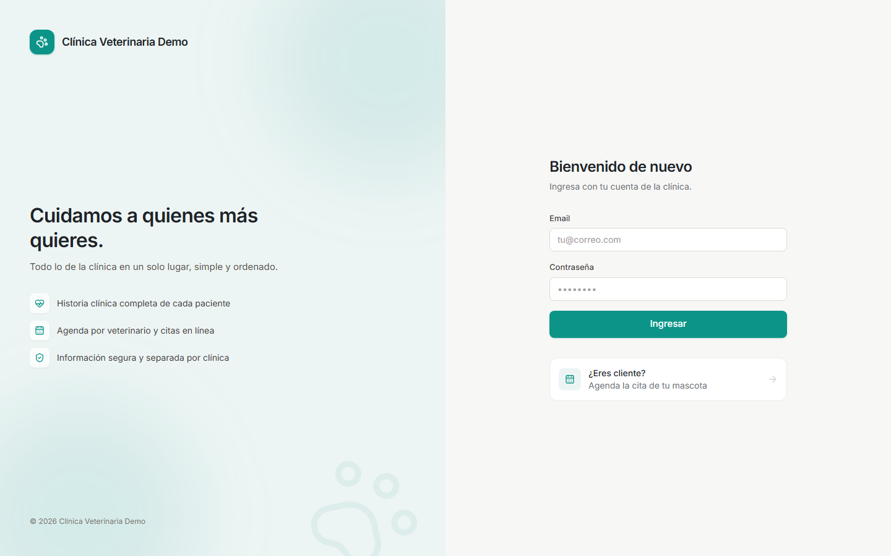

Manual para capacitadores
Manual de uso
de la plataforma veterinaria
Cómo funciona cada módulo, paso a paso, para aprender a usar el sistema completo y enseñarlo a cada clínica.

Versión del producto: MVP + agenda · Octubre de 2026
Se actualiza con cada nueva fase
Contenido
Cómo usar este manual
El manual sigue el orden en que conviene aprender y enseñar: primero la puesta en marcha (lo que hace el administrador una sola vez) y después el trabajo diario de cada rol.
- Conceptos básicos
- Ingreso, menú y perfil
- Puesta en marcha de una clínica
- Usuarios, roles y permisos
- Clientes y pacientes
- Ficha de la mascota e historia clínica
- Citas, horarios y agenda en línea
- Avisos por WhatsApp
- Consultas
- Inventario
- Facturación y cobros
- Pantalla de inicio
- Auditoría
- Flujo completo de un día
- Plan de capacitación por rol
- Problemas frecuentes
Para practicar: use la clínica demo (demo.162.214.196.37.nip.io) con el usuario admin@demo.test. Cree datos de prueba con nombres evidentes (por ejemplo "Prueba Pérez") para no confundirlos con datos reales.
1. Conceptos básicos
- Cada clínica tiene su propia dirección, por ejemplo miclinica.plataforma.com. Los usuarios de una clínica solo pueden entrar por la dirección de esa clínica, y nunca ven información de otra.
- Cliente es la persona responsable (el dueño). Paciente es la mascota. Un cliente puede tener varias mascotas.
- Consulta es cada atención médica. Las consultas, vacunas, procedimientos y notas forman la historia clínica de la mascota.
- Cada persona ve solo lo que su rol le permite. Si a alguien no le aparece un menú o un botón, normalmente es por permisos, no por un error.
- Lo importante no se borra: la historia clínica se archiva, las facturas se anulan y los productos se desactivan. Siempre queda rastro.
2 · Primeros pasos
Ingreso, menú y perfil
Entrar al sistema
- Abra en el navegador la dirección de la clínica.
- Escriba su email y contraseña y pulse Ingresar.
- Si el usuario está desactivado o la clave es incorrecta, el sistema lo indica. Varios intentos fallidos seguidos bloquean el ingreso por unos minutos.
El menú lateral
- Clínica: Inicio, Citas, Consultas, Pacientes, Clientes.
- Gestión: Inventario, Facturación.
- Administración: Usuarios, Configuración.
- En el celular, el menú se abre con el botón ☰ de la parte superior.
- Abajo aparece su nombre y rol: un clic lleva a Mi perfil. El ícono de la flecha cierra la sesión.

Mi perfil
Cada persona puede cambiar su nombre, su email de ingreso y su contraseña (pide la actual y la nueva dos veces).
Primera vez: los usuarios que crea el administrador entran con una clave temporal. Enséñeles a cambiarla en Mi perfil el primer día.
3 · Administrador
Puesta en marcha de una clínica
Lista de lo que el administrador configura una sola vez, en este orden. Con esto la clínica queda lista para trabajar.
| # | Qué | Dónde | Para qué |
|---|
| 1 | Datos de la clínica, logo y color | Configuración | Salen en la pantalla, el login, la agenda pública y todos los PDF. |
| 2 | Numeración y pie de factura | Configuración → Facturación | Prefijo y número desde el que arrancan las facturas. |
| 3 | Usuarios del equipo | Usuarios | Una cuenta por persona, con su rol. |
| 4 | Horarios de cada veterinario | Citas → Horarios | Sin horario, el veterinario no recibe citas en línea. |
| 5 | Agenda en línea y mensajes | Citas → Horarios | Duración de citas, anticipación y textos de WhatsApp. |
| 6 | Servicios y precios | Facturación → Servicios | Consulta, vacunación, cirugía, baño… |
| 7 | Productos del inventario | Inventario | Medicamentos, vacunas, alimentos e insumos con su stock. |
Datos y marca de la clínica
Configuración tiene tres partes:
- Datos de la clínica: nombre comercial, razón social, NIT, dirección, teléfono y email.
- Color institucional: elija uno de los sugeridos o escriba el suyo. La vista previa muestra cómo quedará.
- Logo: suba una imagen (mejor cuadrada y con fondo transparente).
Numeración de facturas
En Configuración → Facturación:
- Prefijo: por ejemplo FV.
- Siguiente número: el número desde el que se seguirá facturando (útil si la clínica venía de otro sistema).
- Pie de página: texto que aparece al final de cada factura en PDF (condiciones, cuentas bancarias, agradecimiento). Recuerde: es un comprobante interno, no factura electrónica DIAN.
4 · Administrador
Usuarios, roles y permisos
Crear un usuario
- Entre a Usuarios y pulse Nuevo usuario.
- Escriba el nombre completo, el email (será su usuario de ingreso) y una contraseña temporal.
- Elija el rol y guarde.
- Entréguele la dirección de la clínica, el email y la clave temporal.
Editar o bloquear
- Desde la lista se cambia el rol o se usa Restablecer contraseña si alguien la olvidó.
- Desmarcar Usuario activo bloquea el acceso y cierra sus sesiones abiertas al instante (por ejemplo, cuando alguien deja de trabajar en la clínica).
- La lista muestra el último ingreso de cada persona.
- El sistema no deja desactivar ni quitarle el rol al último administrador.
Roles y permisos
En Usuarios → Roles y permisos hay una matriz: cada fila es un permiso (ver, crear, editar, anular…) y cada columna un rol. Marque o desmarque y guarde.
- Roles incluidos: administrador, veterinario, recepcionista, asistente y contador.
- Nuevo rol crea uno personalizado (por ejemplo "peluquero") para asignarle solo lo que necesita.
- Los cambios aplican la próxima vez que la persona navegue o entre.
Qué puede hacer cada rol (configuración inicial)
| Módulo | Administrador | Veterinario | Recepcionista | Asistente | Contador |
|---|
| Pacientes y clientes | Todo | Ver, crear, editar | Ver, crear, editar | Ver, crear, editar | Ver |
| Consultas e historia | Todo | Todo | Ver | Ver | — |
| Citas | Todo | Todo | Todo | Todo | — |
| Inventario | Todo | Ver | — | Ver | Ver |
| Facturación | Todo | Ver | Facturar y cobrar | — | Todo (incl. anular) |
| Usuarios y configuración | Todo | — | — | — | Ver configuración |
5 · Recepción y médicos
Clientes y pacientes
Registrar un cliente
- Clientes → Nuevo cliente.
- Nombre completo, tipo y número de documento, teléfono celular, email, dirección, ciudad y observaciones.
- Guarde. Desde la ficha del cliente puede agregarle sus mascotas.
Clave: registre siempre el celular completo. Sin él no se puede avisar por WhatsApp.
Buscar
La búsqueda encuentra clientes por nombre, documento, teléfono o email, y mascotas por nombre o por el nombre del dueño.
Registrar una mascota
- Pacientes → Nuevo paciente (o desde la ficha del cliente).
- Elija el dueño. Llene nombre, especie, raza, sexo, fecha de nacimiento, peso, color o señas, microchip y si está esterilizado(a).
- Escriba las alergias si las tiene: se mostrarán en rojo en todas las pantallas de atención.
- Agregue notas generales y, si quiere, una foto.
La edad se calcula sola con la fecha de nacimiento. El peso se actualiza con cada consulta.
6 · Médicos
Ficha de la mascota e historia clínica
Es la pantalla central del médico. Desde aquí se ve todo de la mascota y se inicia cualquier atención.

Resumen de arriba
- Alergias en rojo.
- Consulta en curso, con el botón Continuar.
- Próxima cita y control programado o vencido.
- Vacunas y desparasitaciones vencidas o por vencer.
Botones de la ficha
- Nueva consulta: abre el formulario completo de atención.
- Agendar cita: crea una cita ya con esta mascota.
- + Registro rápido: vacuna, desparasitación, procedimiento o nota, sin abrir una consulta. Para vacunas y desparasitaciones pide la próxima dosis.
- Editar: cambia los datos de la mascota (dueño, peso, alergias…). No modifica la historia.
- Historia en PDF: descarga la historia completa para entregar al dueño o a otro colega.
La línea de tiempo
- Muestra en orden todo lo que se le ha hecho: consultas, vacunas, procedimientos, notas y evolución.
- Se filtra por tipo: consultas, vacunas y desparasitación, procedimientos, notas.
- Un registro equivocado se archiva (no se borra). Para verlo, marque Mostrar registros archivados.
Adjuntos
- Suba exámenes, radiografías, fotos, PDF, Word o Excel a la mascota o a una consulta.
- Son privados: solo se abren con sesión iniciada en la clínica.
¿Consulta o registro rápido? Si hubo examen, diagnóstico o fórmula, use Nueva consulta. Si solo se aplicó una vacuna o se dejó una nota, use Registro rápido.
7 · Recepción
Citas, horarios y agenda en línea
La agenda muestra el día con una columna por veterinario. Las zonas rayadas son horas en que no atiende, y la línea roja marca la hora actual.

Crear una cita
- Haga clic en un espacio libre de la columna del veterinario (o use Nueva cita).
- Busque el paciente, confirme veterinario, fecha, hora y duración.
- Escriba el motivo y, si quiere, notas internas. Guarde.
Las flechas Día anterior / Día siguiente y el selector de fecha mueven la agenda. El sistema no deja cruzar dos citas del mismo veterinario.
Estados de una cita
| Solicitada | La pidió el cliente en línea. Hay que confirmarla. |
| Confirmada | Lista para atender. |
| Atendida | Se inició la consulta desde la cita. |
| Cancelada | No se hará. |
| No asistió | El cliente no llegó. |
Al hacer clic en una cita se abre su detalle: confirmar, reprogramar, cambiar de veterinario, cancelar, marcar inasistencia, iniciar la consulta o avisar por WhatsApp.
Horarios de los veterinarios
En Citas → Horarios se define cuándo atiende cada veterinario: para cada día de la semana se agregan uno o varios bloques (por ejemplo 8:00–12:00 y 14:00–18:00). Quitar elimina un bloque.
Agenda en línea para los clientes
En la misma pantalla:
- Permitir que los clientes soliciten citas en línea: enciende o apaga la página pública.
- Duración de cada cita (15, 30, 45 minutos…).
- Anticipación mínima (horas): por ejemplo 2, para que nadie reserve para dentro de 10 minutos.
- Reservar hasta (días adelante): hasta qué fecha se puede pedir.

Cómo la usa el cliente
- Abre el enlace direccion-de-la-clinica/agendar (se comparte por WhatsApp, Instagram o Google Maps).
- Elige veterinario o "cualquiera disponible", el día y una hora libre.
- Deja su nombre, celular, cédula, email, el nombre y la especie de la mascota, y el motivo.
- No necesita cuenta ni contraseña.
Qué hace la clínica
- La solicitud aparece en la agenda como Solicitada.
- Al confirmarla, si el cliente es nuevo, el sistema crea el cliente y la mascota. Si ya existía (por cédula o teléfono), la asocia.
- Luego se le avisa por WhatsApp.
8 · Recepción
Avisos por WhatsApp
El sistema no envía los mensajes solo: abre WhatsApp con el mensaje ya escrito y la persona pulsa "Enviar". El mensaje sale desde el WhatsApp de la clínica.
- Confirme, cree o cancele la cita. Aparece el botón Enviar por WhatsApp.
- Se abre WhatsApp (en el computador pide WhatsApp Web o la aplicación) con el chat del cliente y el mensaje: mascota, fecha, hora, veterinario y dirección.
- Revise y pulse Enviar.
También hay un botón de recordatorio para enviar el día anterior a la cita.
Personalizar los mensajes
En Citas → Horarios, sección Mensajes de WhatsApp para el cliente, se ajusta el texto de cada mensaje (confirmación, cancelación, recordatorio) con el tono de la clínica. Los datos de la cita se rellenan solos.
Si el botón aparece gris: el cliente no tiene un celular válido. Edite el cliente y escriba su número completo.
9 · Médicos
Consultas
Una consulta se puede iniciar desde la cita (lo ideal), desde la ficha de la mascota o desde Consultas → Nueva consulta.

Lo que siempre se llena
- Motivo de consulta y anamnesis / síntomas (lo que cuenta el dueño).
- Examen físico: peso, temperatura, frecuencia cardiaca y respiratoria, hallazgos.
- Diagnóstico y tratamiento.
Secciones que se abren si hacen falta
- Medicamentos: nombre, dosis, frecuencia, duración, vía e indicaciones. Si el medicamento está en el inventario, elíjalo de la lista y marque "Lo lleva" con la cantidad para que luego se facture.
- Exámenes solicitados con observaciones. El resultado se registra después.
- Vacunas / desparasitación aplicadas: tipo, producto y próxima dosis.
- Indicaciones y control: indicaciones para el dueño, fecha de control y observaciones internas (no salen en documentos).
- Fecha y veterinario: por defecto, ahora y el médico que la registra.
Guardar o finalizar
- Guardar y seguir después: la consulta queda en curso y se puede editar (por ejemplo, mientras llegan exámenes).
- Finalizar consulta: queda cerrada y ya no se edita, para proteger la historia. Después solo se agregan notas de evolución y resultados de exámenes.
Documentos
- Fórmula médica / receta en PDF, con medicamentos, indicaciones, control y firma.
- Orden de exámenes en PDF.
- Ambos llevan el logo, NIT y datos de la clínica.
Qué pasa automáticamente
- La cita de origen queda Atendida.
- El peso actualiza el de la mascota.
- Las vacunas aplicadas quedan en la historia con su próxima dosis.
La lista de Consultas se filtra por fechas y por estado (en curso / finalizadas).
10 · Administración y bodega
Inventario

Crear un producto
- Inventario → Nuevo producto.
- Nombre, código, unidad (tableta, frasco, kg…), categoría y proveedor.
- Precios: costo de compra, precio de venta e IVA (0, 5 o 19%). El margen se calcula solo.
- Existencias: stock inicial, stock mínimo (para la alerta) y próximo vencimiento.
Desmarcar Producto activo lo oculta sin perder su historial. Los productos no se borran.
Alertas (filtros arriba de la lista)
- Stock bajo: igual o por debajo del mínimo.
- Por vencer (30 días).
- Vencidos con existencias.
Movimientos (desde el detalle del producto)
| Entrada | Compra al proveedor: cantidad, costo unitario, factura o referencia, lote y vencimiento del lote. |
| Salida | Uso interno, vencido, dañado o devolución, con su motivo. |
| Ajuste | Conteo físico: escriba lo que hay realmente en la bodega y el sistema registra la diferencia. |
- Las ventas se descuentan solas al emitir la factura. No registre una salida por una venta.
- El stock nunca queda negativo.
- Inventario → Movimientos es el kardex general: todos los movimientos, con fecha, usuario y saldo, filtrables por fechas.
11 · Recepción y contabilidad
Facturación y cobros

Servicios
Facturación → Servicios: lo que la clínica cobra además de los productos (consulta, vacunación, cirugía, baño…). Cada uno tiene nombre, precio e IVA. Si se marca Agregarlo automáticamente al facturar una consulta, entra solo en la cuenta (útil para el valor de la consulta).
Facturar una consulta
- En la consulta pulse Facturar.
- Se crea un borrador con el servicio de consulta y los medicamentos marcados "Lo lleva".
- Revise, agregue o quite líneas, ajuste cantidades y descuentos, y escriba observaciones si hace falta.
- Pulse Emitir. Puede registrar el pago en ese mismo momento.
Venta de mostrador
Facturación → Nueva factura: elija cliente (y mascota si aplica) y agregue productos o servicios.
Estados
| Borrador | Se puede editar. No tiene número ni descuenta inventario. |
| Emitida | Tiene número consecutivo, descuenta el inventario y ya no se edita. |
| Anulada | Exige un motivo, devuelve el stock y queda registrada. Nunca se borra. |
Pagos
- Registrar pago: valor recibido, forma de pago (efectivo, tarjeta, transferencia, Nequi, Daviplata) y referencia o comprobante.
- Se aceptan abonos parciales: la factura muestra lo pagado y el saldo.
- El filtro Por cobrar muestra las facturas con saldo pendiente.
PDF
Cada factura se descarga en PDF con la marca de la clínica y el pie configurado.
Si no deja emitir: algún producto no tiene stock suficiente. Registre la entrada en el inventario o ajuste la cantidad.
12 · Todos
Pantalla de inicio
Cada persona ve un tablero según su rol:
- Citas de hoy y próximas citas.
- Consultas en curso.
- Ventas del día y del mes, y cartera por cobrar (solo quien tiene permiso de facturación).
- Alertas de inventario.
- Accesos rápidos a lo que más se usa.
13 · Administrador
Auditoría
Configuración → Auditoría muestra quién hizo qué, cuándo y desde dónde: ingresos (y fallidos), facturas emitidas y anuladas, pagos, ajustes de inventario, cambios de precio, permisos y configuración. En los cambios muestra el valor antes y después. Se filtra por fechas.
Uso típico: "¿Quién anuló esta factura?" o "¿Quién cambió el precio de la vacuna?". Se responde aquí en segundos.
14 · Práctica integradora
Flujo completo de un día
Ejercicio para cerrar la capacitación. Hágalo de principio a fin con datos de prueba:
- Agenda en línea: desde un celular abra /agendar y pida una cita como cliente nuevo.
- Confirmar: en Citas confirme la solicitud y avise por WhatsApp.
- Atender: en la cita pulse Iniciar consulta. Llene signos, diagnóstico y un medicamento del inventario con "Lo lleva".
- Documentos: descargue la receta en PDF.
- Finalizar la consulta.
- Facturar: pulse Facturar, emita y registre el pago.
- Verificar: el stock del medicamento bajó, la cita está Atendida, la consulta aparece en la historia y la venta en el inicio.
15 · Para el capacitador
Plan de capacitación por rol
Capacite a cada grupo solo en lo que usa. Sesiones cortas y con práctica funcionan mejor que una sola sesión larga.
| Rol | Duración | Temas |
|---|
| Administrador | 2 h | Puesta en marcha completa (sección 3), usuarios y permisos, horarios, servicios, inventario inicial, auditoría. Luego el flujo de un día. |
| Veterinario | 1 h | Agenda del día, ficha de la mascota, registro rápido, consulta completa (guardar vs. finalizar), receta y orden de exámenes, adjuntos, notas de evolución. |
| Recepcionista | 1 h 30 | Clientes y pacientes, citas y estados, solicitudes en línea, WhatsApp, facturar consulta y venta de mostrador, pagos y abonos. |
| Asistente | 45 min | Clientes y pacientes, citas, consulta de inventario, registro rápido si se le da permiso. |
| Contador | 45 min | Facturas, filtros por fecha y por cobrar, pagos, anulaciones con motivo, kardex, auditoría. |
Lista de chequeo al terminar
- Cada persona entró con su usuario y cambió su contraseña.
- Logo, color y datos legales configurados.
- Prefijo y numeración de facturas definidos.
- Horarios de todos los veterinarios cargados.
- Servicios con precio creados.
- Productos principales con stock real.
- Enlace de agenda en línea compartido en las redes de la clínica.
- Flujo completo de un día practicado sin ayuda.
16 · Soporte
Problemas frecuentes
| Situación | Qué hacer |
|---|
| "No me aparece un menú o un botón" | Es un tema de permisos. El administrador lo revisa en Usuarios → Roles y permisos. |
| "No puedo entrar" | Verifique la dirección de la clínica (no la de otra), el email y la clave. El administrador puede restablecer la contraseña o revisar que el usuario esté activo. |
| "No puedo editar la consulta" | Está finalizada. Agregue una nota de evolución en lugar de editarla. |
| "Me equivoqué en un registro de la historia" | Archívelo y créelo de nuevo. El archivado sigue consultable. |
| "No deja emitir la factura" | Falta stock de algún producto. Registre la entrada o corrija la cantidad. |
| "Me equivoqué en una factura emitida" | Anúlela con el motivo (devuelve el stock) y haga una nueva. |
| "El botón de WhatsApp está gris" | El cliente no tiene celular válido. Edítelo. |
| "El cliente no ve horas en la agenda en línea" | Revise que la agenda esté encendida, que el veterinario tenga horario ese día y la anticipación mínima. |
| "La cita no se deja crear a esa hora" | Ese veterinario ya tiene una cita que se cruza. |
| "El stock no coincide con la bodega" | Haga un Ajuste con el conteo real. Revise el kardex para ver qué pasó. |
Aún no disponible (no prometer): factura electrónica DIAN, envío automático de WhatsApp, recordatorios por email, reportes detallados con exportación a Excel, manejo de varias sedes.